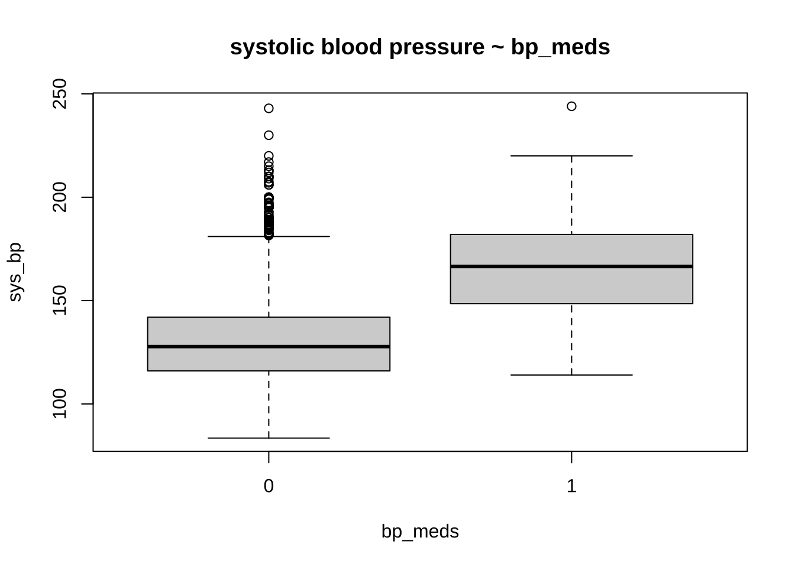
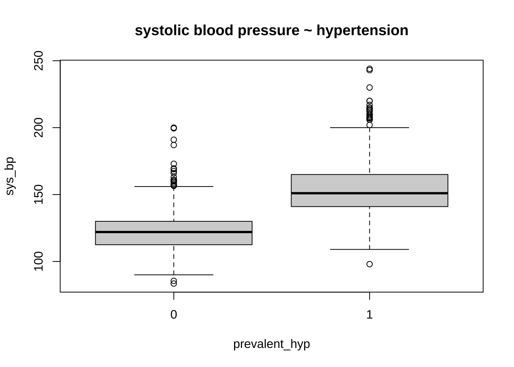
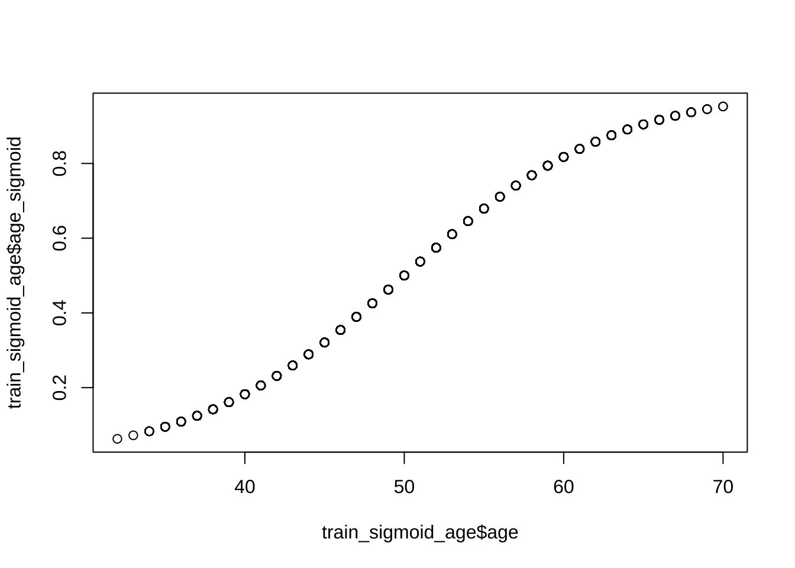

Modelling the 10-years risk of coronary heart disease
Author
Leonardo Cerliani
Published
July 23, 2023
Introduction
The Framingham dataset (available also on kaggle) is an ongoing study which has been running since 1948. It aims to identify demographic, lifestyle and medical factors which are associated with the 10-year risk of developing heart disease.
Here we use logistic regression to model the 10-year risk of coronary heart disease (CHD). The dataset consists of:
4238 individuals, 15% of which with assessed risk of CHD
43% males, 57% females between 32 and 70 yrs (median age = 49)
15 recorded variables, including education, smoking habits, blood pressure measurements and anomalies, blood sample indices (e.g. glucose), medicament assumptions.
The final model correctly predicts risk of CHD in 10 years in 83% of the people who are actually at risk (sensitivity) when the threshold for binary classification is set at 0.1
The choice of this threshold (0.1) leads to many false positives, however given the potential life-threatening implications of false negatives - and the relatively simple continous monitoring of the patients with positive prediction - the choice obviously falls on maximising the sensitivity.
The model is simple, contaning only easily retrievable variables: sex, age, systolic blood pressure, glucose and smoking habits
Assumption of blood pressure medicaments does not appear to decrease the odds of CHD risk
The amount of explained variance is moderate (17%). Other unexplored variables such as alcohol consumption, stress and wealth (among others) might improve model fit and performance.
Column description
Sex: male or female(Nominal)
Age: Age of the patient;(Continuous - Although the recorded ages have been truncated to whole numbers, the concept of age is continuous)
Current Smoker: whether or not the patient is a current smoker (Nominal)
Cigs Per Day: the number of cigarettes that the person smoked on average in one day.(can be considered continuous as one can have any number of cigarettes, even half a cigarette.)
Medical( history)
BP Meds: whether or not the patient was on blood pressure medication (Nominal)
Prevalent Stroke: whether or not the patient had previously had a stroke (Nominal)
Prevalent Hyp: whether or not the patient was hypertensive (Nominal)
Diabetes: whether or not the patient had diabetes (Nominal)
Tot Chol: total cholesterol level (Continuous)
Sys BP: systolic blood pressure (Continuous)
Dia BP: diastolic blood pressure (Continuous)
BMI: Body Mass Index (Continuous)
Heart Rate: heart rate (Continuous - In medical research, variables such as heart rate though in fact discrete, yet are considered continuous because of large number of possible values.)
Glucose: glucose level (Continuous)
Predict variable (desired target) - 10 year risk of coronary heart disease CHD (binary: “1”, means “Yes”, “0” means “No”)
Abbreviations: - EDA : Exploratory Data Analysis - EV : Explanatory Variable (i.e. predictor)
To estimate the perfomance of the model with out-of-sample data, we split the whole dataset in a train (60% - 2543 data points) and test (40% - 1695 data points) set.
Code
set.seed(124)N =nrow(df)split_index <-sample(c("train","test"), N, replace = T, prob =c(0.6,0.4))train <- df[which(split_index =="train"),] # train settest <- df[which(split_index =="test"),] # test set
Outliers check
We will carry out the check for outliers - and subsequently evaluate potential imputation for NA - only on the train data, and blindly apply this to the test. In a real world situation, the test set can grow continously, therefore we need to take decisions only on the train data.
The evaluation for potential NA imputation will be carried out later, just before modelling. The reason for this is that carrying out NA imputation first would bias the EDA.
Observations All the numerical values are in the norm, except for blood pressure. Specifically, the systolic blood pressure sys_bp is way too high, with about 4% of the participants having a bp > 180 (requiring immediate medical care).
However, in published papers on the Framinghton studies these values are accepted as plausible. We will therefore only exclude values above 250 mmHg.
Code
# train %>% select_if(is.numeric) %>% summary()# boxplot(glucose ~ diabetes, data = train, main = "glucose ~ diabetes")boxplot(sys_bp ~ bp_meds, data = train, main ="systolic blood pressure ~ bp_meds")

Code
boxplot(sys_bp ~ prevalent_hyp, data = train, main ="systolic blood pressure ~ hypertension")

Code
# percent of people with sys_bp > 180pct_high_sys_bp <-round((train$sys_bp >180) %>%sum() /nrow(train) *100,2)# xtabs(~ prevalent_hyp + bp_meds, data = train)train <- train %>%filter(sys_bp <=250)test <- test %>%filter(sys_bp <=250)
EDA of numerical variables
Initially, we carry out t-tests to discover which EVs exhibit (corrected) significant differences between people with and without risk of CHD.
Then we will also examine the potential correlations between variables. If the latter are substantial, we will evaluate the possibility of discarding some EVs due to collinearity.
age appears to be the most discriminant variable for ten year CHD prediction. Other EVs which are significantly different (after correction with FDR) in people with and without CHD risk are bmi, sys_bp, dia_bp, glucose, tot_chol.
the systolic sys_bp and diastolic dia_bp blood pressure are correlated with each other - as expected. Since CHD is especially related to hypertension, we will only use systolic blood pressure
bmi and age are also correlated with blood pressure, however they appear to be important variables for CHD and their correlation with blood pressure is mild, so we will keep them
NB: the number of cigarettes per day (cigs_per_day) will be explored as a categorical variable (see below) with levels for tens of cigarettes per day
EDA of categorical variables
Code
# train %>% select_if(is.factor) %>% summary
As before for the numerical variables, we will first assess a dependence between risk of CHD and other categorical variables, and then explore the reciprocal relationships of all categorical variables to assess the presence of collinearity.
The values are too sparse to treat this as a continous variable. We will therefore group the # cigs per day in tens and treat this as a categorical variable.
A first visual exploration shows that there appear to be mild differences in the proportion of people smoking different amount of cigarettes per day.
When carrying out a chi-square test of independence, we are warned that the results might be incorrect. This appears to be due to the fact that there are too few observations in the category for 50 and 60 cigarettes per day. When these levels are removed, a significant (p = 0.0066) dependence is shown between risk group and amount of cigarettes per day.
Code
# Suppress summarise infooptions(dplyr.summarise.inform =FALSE)train %>%select(ten_year_chd, cigs_per_day) %>%na.omit() %>%mutate(cigs_factor =round(cigs_per_day/10,0)) %>%group_by(ten_year_chd, cigs_factor) %>%summarise(count =n(), .group ="drop") %>%group_by(ten_year_chd) %>%mutate(prop = count /sum(count)) %>%select(ten_year_chd, cigs_factor, prop) %>%ggplot(aes(x =factor(cigs_factor), y = prop, fill = ten_year_chd)) +geom_bar(stat ="identity", position ="dodge") +labs(x ="Tens of Cigarettes per Day", y ="Proportion in each group", fill ="CHD Status")
The 10 year risk of CHD is more prevalent in males than in females
Not surprisingly, hypertension and assumption of blood pressure medications is also associated with risk. We will also examine the latter, although only ~ 3% of the sample takes these medications
The number of cigarettes smoked per day (in groups of 10) also increaes the risk of CHD. Interestingly, still, more than 50% of the people who are at risk do not smoke. It would be interesting to have data about the quality of the air of the place where they live, or whether their partner is a smoker.
It is also interesting that the relationship between amount of cigarettes per day and risk is not linear: there are more people at risk among those who smoke 20-30 or 40-50 cigs per day. while among those who smoke 10-20 or 30-40 cigs per day the proportion of people with and without risk is almost 50%. This strange behaviour can probably be - at least in part - explained by the fact that smokers tend to underestimate the amount of cigarettes smoked.
Instead, the fact of being a current smoker does not appear to be a risk factor
There is an interaction between being make, having hypertension and being a current smoker. We will examine whether this interaction can increase the prediction, although the fact of currently smoking per se apparently does not.
Choice of predictors
Numerical variables Age (age), High blood pressure (sys_bp), body-mass index (bmi), glucose blood level (glucose), cholesterol blood level (tot_chol) appear to be involved in predicting the risk of CHD. As noted above, cigs_per_day was treated as a categorical variables with levels for o and multiples of 10.
Categorical variables Sex (male), hypertension (prevalent_hyp), blood pressure medications (bp_meds), education (education) and number of cigarettes per day (cigs_per_day) appear to be involved in predicting the risk of CHD.
There are widespread associations between numerical and categorical variables. This is not surprising for two reasons:
some variables are proxy each other (e.g. sys_bp, prevalence_hyp, bp_meds)
some variables are linked by known relationships: e.g. with age, the bmi increases, and both are likely to lead to increased blood pressure sys_bp, which in turn can lead to hypertension and relative medicaments
Despite this, we will enter all the selected variables in the model and assess the presence of collinearity using VIF.
age
Code
library(gridExtra)boxplot_tt <-function(response, predictor) { tt <-t.test(train[[response]] ~ train[[predictor]], data =train) res <-paste0("t = ", round(tt$statistic,2), " p = ", round(tt$p.value,4)) p <- train %>%na.omit() %>%ggplot(aes(x = .data[[predictor]], y = .data[[response]])) +geom_boxplot() +labs(title =paste0(predictor," vs ", response),subtitle = res)return(p)}p1 <-boxplot_tt("age", "male")p2 <-boxplot_tt("age", "prevalent_hyp")p3 <-boxplot_tt("age", "bp_meds")grid.arrange(p1, p2, p3, nrow =1)
As a last step before fitting the models, we need to take care of NAs in these 6 variables. As mentioned in the beginning, we do this here in order not to bias the EDA.
In case of imputation, we will apply the same procedure blindly to the test set.
bmi is significantly different for males and females. There are only 12 values missing. We will impute the NAs with the median of each gender in either risk or no-risk group.
glucose and tot_chol are significantly different especially in people with and without hypertension. We will impute the NAs with the median of each gender in either risk or no-risk group.
bp_meds is a very important variable, and not easy to impute, so we don’t want to run risks here. We see from the table below that the people where blood pressure (bp) medication was not recorded have (median) bp values compatible with people who have either high or low blood pressure AND do not take medications. This could justify the imputation. At the same time, this is a very important variable, associated with drug use. We don’t want to run this risk. We will therefore discard people where it is not known whether they take medications.
cigs_per_day is a variable that can hardly be imputed correctly, therefore we will remove the data points with NA in this variable (less than 1%)
# ------------------------- train --------------------------------------------train <- train %>%# impute the bmi as the median of males/femalesgroup_by(ten_year_chd, male) %>%mutate(bmi =ifelse(is.na(bmi), median(bmi, na.rm = T),bmi)) %>%ungroup() %>%# impute glucose and cholesterol level as the median of prevalent_hypgroup_by(ten_year_chd, prevalent_hyp) %>%mutate(glucose =ifelse(is.na(glucose), median(glucose, na.rm=T), glucose)) %>%mutate(tot_chol =ifelse(is.na(tot_chol), median(tot_chol, na.rm=T), tot_chol)) %>%ungroup() %>%# remove people where bp_meds is not unknownfilter(!is.na(bp_meds)) %>%# remove people with no information about education levelfilter(!is.na(education)) %>%# # remove the mean from numerical variables# mutate_if(is.numeric, ~ . - mean(., na.rm = TRUE)) %>% # remove residual NAsna.omit()train %>%select( ten_year_chd, age, sys_bp, bmi, glucose, tot_chol, male, prevalent_hyp, bp_meds, education ) %>% diagnose %>% flextable
variables
types
missing_count
missing_percent
unique_count
unique_rate
ten_year_chd
factor
0
0
2
0.0008093889
age
numeric
0
0
39
0.0157830838
sys_bp
numeric
0
0
213
0.0861999191
bmi
numeric
0
0
1,099
0.4447592068
glucose
numeric
0
0
121
0.0489680291
tot_chol
numeric
0
0
227
0.0918656414
male
factor
0
0
2
0.0008093889
prevalent_hyp
factor
0
0
2
0.0008093889
bp_meds
factor
0
0
2
0.0008093889
education
factor
0
0
4
0.0016187778
Code
# ------------------------- test --------------------------------------------test <- test %>%# impute the bmi as the median of males/femalesgroup_by(ten_year_chd, male) %>%mutate(bmi =ifelse(is.na(bmi), median(bmi, na.rm = T),bmi)) %>%ungroup() %>%# impute glucose and cholesterol level as the median of prevalent_hypgroup_by(ten_year_chd, prevalent_hyp) %>%mutate(glucose =ifelse(is.na(glucose), median(glucose, na.rm=T), glucose)) %>%mutate(tot_chol =ifelse(is.na(tot_chol), median(tot_chol, na.rm=T), tot_chol)) %>%ungroup() %>%# remove people where bp_meds is not unknownfilter(!is.na(bp_meds)) %>%# remove people with no information about education levelfilter(!is.na(education)) %>%# # remove the mean from numerical variables# mutate_if(is.numeric, ~ . - mean(., na.rm = TRUE)) %>% # remove residual NAsna.omit()test %>%select( ten_year_chd, age, sys_bp, bmi, glucose, tot_chol, male, prevalent_hyp, bp_meds, education ) %>% diagnose %>% flextable
variables
types
missing_count
missing_percent
unique_count
unique_rate
ten_year_chd
factor
0
0
2
0.001265823
age
numeric
0
0
37
0.023417722
sys_bp
numeric
0
0
201
0.127215190
bmi
numeric
0
0
859
0.543670886
glucose
numeric
0
0
102
0.064556962
tot_chol
numeric
0
0
213
0.134810127
male
factor
0
0
2
0.001265823
prevalent_hyp
factor
0
0
2
0.001265823
bp_meds
factor
0
0
2
0.001265823
education
factor
0
0
4
0.002531646
Analytic strategy
It appears that there are two interesting questions:
How well is the risk predicted by generic factors alone? (such as sex, age, and blood pressure)
How much can we increase the prediction if we include other variables more related to hypertension, such as diagnosed hypertension or assumption of blood pressure medications?
Since we allowed some correlated variables to enter the model, we will pay close attention to the VIF (variance inflation factor).
After the “best” model is detemined by manual stepwise regression, we will compare the former to an automatic stepwise regression carried out using the AIC criterion alone.
Logistic regression
Procedure for stepwise modelling
We start by fitting the “maximal” model, which includes all the provided EVs, to have a baseline estimate for the AUC of this model and of the impact of the correlation between variables we previously detected with EDA - for the latter, we will check the VIF.
Then we fit the full model, which includes all the variables we previously selected based on the EDA. This will show how well the hints gathered in the EDA are actually reflected in the significance of the coefficients. Specifically, compared to the “maximal” model.
We will then proceed to eliminate EVs based on whether the coefficients are not sigificant or have a very small effect (in terms of odds ratio). At each step we evaluate the AIC and AUC to detect whether reducing the EVs led to an increase or decrease of the performance.
Finally we will examine the confusion matrix and adjust the threshold for binary prediction in order to have maximum Sensitivity (more on this later).
Format of the summary tables
The coefficients are reported in two forms (at the expense of verbosity):
original, non-standardized and non-exponentiated (using summary()): to allow calculation of the odds ratio (via exp()) of 10 year CHD given the actual values of the EVs for a specific person.
standardized and exponentiated (using jtools::summ()): to allow comparing the magnitude of the coefficients, to have the confidence intervals and to calculate the VIF.
Results
The AIC was similar across all examined models (between 1887 and 1890), therefore this metric had a small weight in the choice of the final model. Similarly, all the models explained at most 17% of the total variance in the data, which is not a substantial amount.
The VIF was not critical, even in the maximal model, therefore the impact of correlated predictors was minimal or negligible.
The maximal model highlighted the contribution of gender, age, systolic blood pressure, and to a lesser extent the prevalence of hypertension and education. Importantly, the p values for some of these variables was higher than in simpler models, most likely due to collinearity with other variables. The AUC of this model was 0.703.
Our full model highlighted the same variables. In addition reducing the number of EVs increased the significance of most of the selected EVs (especially age and systolic blood pressure). The AUC of this model was 0.705.
We then removed EVs with small or no effect from the full model, specifically blood pressure medications, bmi, cholesterol and education. This led to an AUC of 0.711, and all variables significant.
Further removing the EVs specifying whether the patient had hypertension led to a simpler model and did not substantially change the AUC (0.713).
Remarkably, this model contained only gender, age, systolic blood pressure and glucose blood level, in addition to number of cigarettes smoked per day. That is, two common demographic variables, and two physiologic measurements which can be easily retrieved with blood pressure measurement and a simple blood exam
The increase in odds to develop a CHD in 10 years were as follows for each EV:
sex: males have \(exp(0.449) \approx 57\%\) greater odds of CHD risk than females
cigarettes per day : \(exp(0.1766) \approx 19\%\) greater odds for any additional 10 cigarettes smoked every day
age : the odds of CHD increase \(exp(0.0658) \approx 6.8\%\) every year
systolic blood pressure : \(exp(0.0186) \approx 1.8\%\) greater odds for each mmHg
glucose : \(exp(0.0075) \approx 0.7\%\) greater odds for each mg
The intercept can be interpreted as the probability of a female being at risk when all predictors are set to 0. In our case we have predictors for age, glucose and blood pressure, which are obviously not zero, therefore this interpretation of the intercept is not really helpful in our case. For the sake of calculation: \(p = \frac{e^{\beta_0}}{1 + e^{\beta_0}} = \frac{exp(-8.643)}{1+exp(-8.643)} = 0.000176\)
It is at this point very interesting to notice that:
Assumption of blood pressure medications does not reduce the 10 years risk of CHD
Having hypertension has only a small effect on the prediction of developing a risk of CHD in 10 years
This is a very interesting result from a practical perspective, since it means that generic demographic and physiological variables are much more predictive of the risk of CHD in 10 years with respect to a diagnosis of hypertension, and that the assumption of blood pressure medicaments - presumably to normalize the blood pressure level in people with hypertension - does not reduce the risk of CHD
Our final model therefore includes:
sex
age
systolic blood pressure
glucose
cigarettes per day
Afterwards, we evaluated the performance of our model on the test data. Using a default probability of 0.5 for binary prediction leads to a poor Sensitivity, in that only ~ 7% of the people with a real 10 year CHD risk (\(\frac{16}{16+219}\)) are predicted as being at risk.
Since in our case the aim is to maximise the detection of people who are truly at risk - even at expense of inflating the number of false negatives - we lowered the threshold of binary prediction to 0.1. This allowed us to reach a sensitivity of 84%.
The automatic stepwise regression (stepAIC) identifies the same variables as our final model, plus a small (uncorrected significant) contribution of education level and prevalence of hypertension. However, this model has a smaller AUC (0.703) than our final model, and is also more complex. Therefore we retained our final model.
Finally, we hypothesized that the imbalance between Sensitivity and Specificity could be due to the high proportion of people not at risk in our dataset. Therefore, as a last test, we sampled an equal number of people with and without risk.
In this balanced samples model the AUC increased to 0.738. By using a threshold for binary decision of 0.3, this model correctly predicts 91.4% of the people with actual CHD risk, and a false negative rate of 70%. By adopting a more liberal threshold of 0.4, the model predicts 81.3% of the people with actual CHD, and about 50% of the people with no risk of CHD.
A final remark This model captures only a fraction of the total variance in the data (~ 15%). It is odd that other variables widely thought to be associated with cardiovascular diseases were not recorded, such as stress level (e.g. # hours of work per day/week), alcohol comsumption, quality of the air.
do_logistic_regression : a function to carry out the logistic regression and print out the summary of the model, the ROC curve - and the AUC - as well as the confusion matrix.
plot_ROC : a function that generates an interactive ROC that allows to inspect Sensitivity and Specificity for different levels of threshold for binary decision
Code
do_logistic_regression <-function(EVs, train_data = train, test_data = test, thresh =0.5) {# Assemble the formula formula_string <-paste(EVs, collapse =" + ") formula_obj <-as.formula(paste("ten_year_chd ~", formula_string)) fit <-glm(formula_obj, family ="binomial", data = train_data)# # Standard R summarysummary(fit) %>%print()# Print a summary# summary(fit) %>% print()if (length(EVs) >1) { jtools::summ(fit, confint = T, vifs = T, scale = F, exp = T, digits =2) %>%print() } else { jtools::summ(fit, confint = T, vifs = T, scale = F, exp = T, digits =2) %>%print() }# Estimated probability values from the logistic model phat =predict(fit, newdata = test_data, type ="response")# Confusion matrix and derived quantities - using caret::confusionmatrixsprintf("\n Using a threshold for prediction = %.2f \n\n", thresh) %>%cat() thresh <- thresh predicted <-ifelse(phat > thresh, 1, 0) actual_predicted <-tibble(actual = test_data$ten_year_chd, predicted =ifelse(phat > thresh, 1, 0) ) caret::confusionMatrix(as.factor(predicted), # predictedas.factor(test_data$ten_year_chd), # actual positive ="1"# the positive class in our case is "1" ) %>%print()return(phat)}plot_ROC <-function(test_data = test, phat = phat) {# Define the probability thresholds you want to use pthresh <-seq(0, 1, 0.1)# Create the ROC curve roc_curve <-roc(test_data$ten_year_chd, phat, plot = F, print.auc=T)# Get the coordinates (sensitivity and specificity) for the specified thresholds coordinates <- pROC::coords(roc_curve, pthresh)# Using highcharter h <- coordinates %>%hchart(type ="line",hcaes(x = specificity, y = sensitivity, threshold = threshold) ) %>%hc_xAxis(title =list(text ="Specificity"), reversed =TRUE, min =0, max =1) %>%hc_yAxis(title =list(text ="Sensitivity"), min =0, max =1) %>%hc_add_series(data = coordinates,type ="scatter",hcaes(x = specificity, y = sensitivity, threshold = threshold),marker =list(radius =6, fillColor ="lightblue", lineWidth =2),tooltip =list(headerFormat ="",pointFormat ="<b>Threshold: {point.threshold:.2f}</b><br> Sensitivity: {point.y:.2f}<br> Specificity: {point.x:.2f}") ) %>%hc_chart(aspectRatio =1) %>%# Set the equal aspect ratiohc_title(text =paste("ROC curve - AUC =", round(roc_curve$auc,3)))return(h)}
Manual stepwise
Maximal model
Maximal model, including all the variables in the dataset. We use this only as a benchmark for the models instructed by EDA.
We observe high VIF values in sys_bp and dia_bp - as expected.
Call:
glm(formula = formula_obj, family = "binomial", data = train_data)
Deviance Residuals:
Min 1Q Median 3Q Max
-1.9398 -0.5882 -0.4186 -0.2876 2.8221
Coefficients:
Estimate Std. Error z value Pr(>|z|)
(Intercept) -7.8924235 0.7224553 -10.924 < 2e-16 ***
male1 0.3996399 0.1306947 3.058 0.002230 **
prevalent_hyp1 0.3564960 0.1628251 2.189 0.028565 *
bp_meds1 0.4381388 0.2883448 1.519 0.128638
education2 -0.3319065 0.1512202 -2.195 0.028174 *
education3 -0.3409724 0.1858949 -1.834 0.066621 .
education4 -0.0373354 0.1959238 -0.191 0.848870
age 0.0613141 0.0080512 7.616 2.63e-14 ***
sys_bp 0.0118211 0.0034909 3.386 0.000709 ***
bmi 0.0137041 0.0146029 0.938 0.348011
glucose 0.0075754 0.0021169 3.579 0.000345 ***
tot_chol 0.0002287 0.0014069 0.163 0.870891
cigs_per_day 0.0191629 0.0052321 3.663 0.000250 ***
---
Signif. codes: 0 '***' 0.001 '**' 0.01 '*' 0.05 '.' 0.1 ' ' 1
(Dispersion parameter for binomial family taken to be 1)
Null deviance: 2114.4 on 2470 degrees of freedom
Residual deviance: 1859.5 on 2458 degrees of freedom
AIC: 1885.5
Number of Fisher Scoring iterations: 5
MODEL INFO:
Observations: 2471
Dependent Variable: ten_year_chd
Type: Generalized linear model
Family: binomial
Link function: logit
MODEL FIT:
χ²(12) = 254.88, p = 0.00
Pseudo-R² (Cragg-Uhler) = 0.17
Pseudo-R² (McFadden) = 0.12
AIC = 1885.48, BIC = 1961.04
Standard errors: MLE
----------------------------------------------------------------------
exp(Est.) 2.5% 97.5% z val. p VIF
-------------------- ----------- ------ ------- -------- ------ ------
(Intercept) 0.00 0.00 0.00 -10.92 0.00
male1 1.49 1.15 1.93 3.06 0.00 1.21
prevalent_hyp1 1.43 1.04 1.97 2.19 0.03 1.87
bp_meds1 1.55 0.88 2.73 1.52 0.13 1.09
education2 0.72 0.53 0.97 -2.19 0.03 1.11
education3 0.71 0.49 1.02 -1.83 0.07 1.11
education4 0.96 0.66 1.41 -0.19 0.85 1.11
age 1.06 1.05 1.08 7.62 0.00 1.25
sys_bp 1.01 1.00 1.02 3.39 0.00 2.06
bmi 1.01 0.99 1.04 0.94 0.35 1.16
glucose 1.01 1.00 1.01 3.58 0.00 1.02
tot_chol 1.00 1.00 1.00 0.16 0.87 1.06
cigs_per_day 1.02 1.01 1.03 3.66 0.00 1.22
----------------------------------------------------------------------
Using a threshold for prediction = 0.50
Confusion Matrix and Statistics
Reference
Prediction 0 1
0 1332 219
1 13 16
Accuracy : 0.8532
95% CI : (0.8347, 0.8703)
No Information Rate : 0.8513
P-Value [Acc > NIR] : 0.433
Kappa : 0.0915
Mcnemar's Test P-Value : <2e-16
Sensitivity : 0.06809
Specificity : 0.99033
Pos Pred Value : 0.55172
Neg Pred Value : 0.85880
Prevalence : 0.14873
Detection Rate : 0.01013
Detection Prevalence : 0.01835
Balanced Accuracy : 0.52921
'Positive' Class : 1
Code
plot_ROC(test, phat)
Setting levels: control = 0, case = 1
Setting direction: controls < cases
Remove no-effect EVs
Remove education, bp_meds, bmi, tot_chol since they have no effect on the model.
The AIC slightly decreases with respect to the full model.
Code
# Remove education, bp_meds, bmi, tot_chol since they have# no effect on the modelEVs <-c("male", "prevalent_hyp","age", "sys_bp", "glucose", "cigs_per_day")phat <-do_logistic_regression(EVs, thresh =0.5)
Call:
glm(formula = formula_obj, family = "binomial", data = train_data)
Deviance Residuals:
Min 1Q Median 3Q Max
-2.1088 -0.5889 -0.4241 -0.2951 2.7635
Coefficients:
Estimate Std. Error z value Pr(>|z|)
(Intercept) -8.027822 0.562910 -14.261 < 2e-16 ***
male1 0.434934 0.127776 3.404 0.000664 ***
prevalent_hyp1 0.387263 0.160552 2.412 0.015862 *
age 0.064891 0.007775 8.346 < 2e-16 ***
sys_bp 0.013408 0.003393 3.952 7.76e-05 ***
glucose 0.007572 0.002106 3.595 0.000324 ***
cigs_per_day 0.018188 0.005197 3.500 0.000465 ***
---
Signif. codes: 0 '***' 0.001 '**' 0.01 '*' 0.05 '.' 0.1 ' ' 1
(Dispersion parameter for binomial family taken to be 1)
Null deviance: 2114.4 on 2470 degrees of freedom
Residual deviance: 1870.0 on 2464 degrees of freedom
AIC: 1884
Number of Fisher Scoring iterations: 5
MODEL INFO:
Observations: 2471
Dependent Variable: ten_year_chd
Type: Generalized linear model
Family: binomial
Link function: logit
MODEL FIT:
χ²(6) = 244.31, p = 0.00
Pseudo-R² (Cragg-Uhler) = 0.16
Pseudo-R² (McFadden) = 0.12
AIC = 1884.05, BIC = 1924.73
Standard errors: MLE
----------------------------------------------------------------------
exp(Est.) 2.5% 97.5% z val. p VIF
-------------------- ----------- ------ ------- -------- ------ ------
(Intercept) 0.00 0.00 0.00 -14.26 0.00
male1 1.54 1.20 1.98 3.40 0.00 1.16
prevalent_hyp1 1.47 1.08 2.02 2.41 0.02 1.83
age 1.07 1.05 1.08 8.35 0.00 1.17
sys_bp 1.01 1.01 1.02 3.95 0.00 1.95
glucose 1.01 1.00 1.01 3.60 0.00 1.01
cigs_per_day 1.02 1.01 1.03 3.50 0.00 1.21
----------------------------------------------------------------------
Using a threshold for prediction = 0.50
Confusion Matrix and Statistics
Reference
Prediction 0 1
0 1335 219
1 10 16
Accuracy : 0.8551
95% CI : (0.8367, 0.8721)
No Information Rate : 0.8513
P-Value [Acc > NIR] : 0.3513
Kappa : 0.0958
Mcnemar's Test P-Value : <2e-16
Sensitivity : 0.06809
Specificity : 0.99257
Pos Pred Value : 0.61538
Neg Pred Value : 0.85907
Prevalence : 0.14873
Detection Rate : 0.01013
Detection Prevalence : 0.01646
Balanced Accuracy : 0.53033
'Positive' Class : 1
Code
plot_ROC(test, phat)
Setting levels: control = 0, case = 1
Setting direction: controls < cases
Remove prevalent_hyp
Remove prevalent_hyp since it is only marginally significant
Note that the AIC only marginally increases (less than 0.2%) and this model is much simpler and requires only 4 variables, two of which are common demographic variables (age and sex), while the other two can be easily gathered through a pressure measurement and a blood test.
Code
# Remove prevalent_hyp since it is only marginally significantEVs <-c("male", "age", "sys_bp", "glucose", "cigs_per_day")phat <-do_logistic_regression(EVs, thresh =0.5)
Call:
glm(formula = formula_obj, family = "binomial", data = train_data)
Deviance Residuals:
Min 1Q Median 3Q Max
-2.1053 -0.5899 -0.4330 -0.2982 2.8162
Coefficients:
Estimate Std. Error z value Pr(>|z|)
(Intercept) -8.643579 0.504565 -17.131 < 2e-16 ***
male1 0.449590 0.127385 3.529 0.000417 ***
age 0.065845 0.007745 8.502 < 2e-16 ***
sys_bp 0.018684 0.002597 7.194 6.29e-13 ***
glucose 0.007547 0.002112 3.573 0.000353 ***
cigs_per_day 0.017858 0.005184 3.445 0.000571 ***
---
Signif. codes: 0 '***' 0.001 '**' 0.01 '*' 0.05 '.' 0.1 ' ' 1
(Dispersion parameter for binomial family taken to be 1)
Null deviance: 2114.4 on 2470 degrees of freedom
Residual deviance: 1875.8 on 2465 degrees of freedom
AIC: 1887.8
Number of Fisher Scoring iterations: 5
MODEL INFO:
Observations: 2471
Dependent Variable: ten_year_chd
Type: Generalized linear model
Family: binomial
Link function: logit
MODEL FIT:
χ²(5) = 238.54, p = 0.00
Pseudo-R² (Cragg-Uhler) = 0.16
Pseudo-R² (McFadden) = 0.11
AIC = 1887.82, BIC = 1922.69
Standard errors: MLE
--------------------------------------------------------------------
exp(Est.) 2.5% 97.5% z val. p VIF
------------------ ----------- ------ ------- -------- ------ ------
(Intercept) 0.00 0.00 0.00 -17.13 0.00
male1 1.57 1.22 2.01 3.53 0.00 1.16
age 1.07 1.05 1.08 8.50 0.00 1.17
sys_bp 1.02 1.01 1.02 7.19 0.00 1.14
glucose 1.01 1.00 1.01 3.57 0.00 1.01
cigs_per_day 1.02 1.01 1.03 3.44 0.00 1.20
--------------------------------------------------------------------
Using a threshold for prediction = 0.50
Confusion Matrix and Statistics
Reference
Prediction 0 1
0 1337 219
1 8 16
Accuracy : 0.8563
95% CI : (0.8381, 0.8733)
No Information Rate : 0.8513
P-Value [Acc > NIR] : 0.3
Kappa : 0.0987
Mcnemar's Test P-Value : <2e-16
Sensitivity : 0.06809
Specificity : 0.99405
Pos Pred Value : 0.66667
Neg Pred Value : 0.85925
Prevalence : 0.14873
Detection Rate : 0.01013
Detection Prevalence : 0.01519
Balanced Accuracy : 0.53107
'Positive' Class : 1
Code
plot_ROC(test, phat)
Setting levels: control = 0, case = 1
Setting direction: controls < cases
Assess categorical interactions
The number of cigarettes per day is a relevant factor, although being a current smoker is not. Since there is an interaction between being male, current smoker and having hypertension, it is worth exploring whether including these interactions would improve the performance of the model.
However, the results show that the coefficients associated with male:current_smoker and current_smoker:prevalent_hyp are not significant - especially after correction. Also, they are highly collinear with cigs_per_day - which becomes not significant - and do not improve the model performance.
For all these resasons, these interactions will not be included in the final model.
Code
# Try to include `male:current_smoker` and `current_smoker:prevalent_hyp`EVs <-c("male", "age", "sys_bp", "glucose", "male:current_smoker", "current_smoker:prevalent_hyp")phat <-do_logistic_regression(EVs, thresh =0.5)
Call:
glm(formula = formula_obj, family = "binomial", data = train_data)
Deviance Residuals:
Min 1Q Median 3Q Max
-2.0959 -0.5871 -0.4262 -0.2940 2.7761
Coefficients:
Estimate Std. Error z value Pr(>|z|)
(Intercept) -8.071834 0.575043 -14.037 < 2e-16 ***
male1 0.411137 0.177391 2.318 0.020466 *
age 0.064531 0.007790 8.284 < 2e-16 ***
sys_bp 0.013450 0.003398 3.959 7.54e-05 ***
glucose 0.007486 0.002101 3.563 0.000367 ***
male0:current_smoker1 0.386439 0.213094 1.813 0.069760 .
male1:current_smoker1 0.560270 0.206397 2.715 0.006637 **
current_smoker0:prevalent_hyp1 0.472103 0.200758 2.352 0.018693 *
current_smoker1:prevalent_hyp1 0.287916 0.201998 1.425 0.154058
---
Signif. codes: 0 '***' 0.001 '**' 0.01 '*' 0.05 '.' 0.1 ' ' 1
(Dispersion parameter for binomial family taken to be 1)
Null deviance: 2114.4 on 2470 degrees of freedom
Residual deviance: 1871.3 on 2462 degrees of freedom
AIC: 1889.3
Number of Fisher Scoring iterations: 5
MODEL INFO:
Observations: 2471
Dependent Variable: ten_year_chd
Type: Generalized linear model
Family: binomial
Link function: logit
MODEL FIT:
χ²(8) = 243.03, p = 0.00
Pseudo-R² (Cragg-Uhler) = 0.16
Pseudo-R² (McFadden) = 0.11
AIC = 1889.32, BIC = 1941.64
Standard errors: MLE
-------------------------------------------------------------------------------
exp(Est.) 2.5% 97.5% z val. p
------------------------------------ ----------- ------ ------- -------- ------
(Intercept) 0.00 0.00 0.00 -14.04 0.00
male1 1.51 1.07 2.14 2.32 0.02
age 1.07 1.05 1.08 8.28 0.00
sys_bp 1.01 1.01 1.02 3.96 0.00
glucose 1.01 1.00 1.01 3.56 0.00
male0:current_smoker1 1.47 0.97 2.23 1.81 0.07
male1:current_smoker1 1.75 1.17 2.62 2.71 0.01
current_smoker0:prevalent_hyp1 1.60 1.08 2.38 2.35 0.02
current_smoker1:prevalent_hyp1 1.33 0.90 1.98 1.43 0.15
-------------------------------------------------------------------------------
-------------------------------------------
VIF
------------------------------------ ------
(Intercept)
male1 2.24
age 1.18
sys_bp 1.96
glucose 1.01
male0:current_smoker1 4.18
male1:current_smoker1 4.18
current_smoker0:prevalent_hyp1 3.57
current_smoker1:prevalent_hyp1 3.57
-------------------------------------------
Using a threshold for prediction = 0.50
Confusion Matrix and Statistics
Reference
Prediction 0 1
0 1332 221
1 13 14
Accuracy : 0.8519
95% CI : (0.8334, 0.8691)
No Information Rate : 0.8513
P-Value [Acc > NIR] : 0.4892
Kappa : 0.0786
Mcnemar's Test P-Value : <2e-16
Sensitivity : 0.059574
Specificity : 0.990335
Pos Pred Value : 0.518519
Neg Pred Value : 0.857695
Prevalence : 0.148734
Detection Rate : 0.008861
Detection Prevalence : 0.017089
Balanced Accuracy : 0.524955
'Positive' Class : 1
Code
plot_ROC(test, phat)
Setting levels: control = 0, case = 1
Setting direction: controls < cases
Sigmoid for age
We also decided to try to model age as a sigmoid, under the assumption that the odds of a CHD risk in ten years were overall smaller for people < 40 and would increase at a steeper rate afterwards, however the perfomance of the model did not change.
Code
sigmoid_function <-function(x, a, b, c, d) {# Sigmoid function formula: a + (b - a) / (1 + exp(-c * (x - d)))return(a + (b - a) / (1+exp(-c * (x - d))))}# Define the parameters for the sigmoid function to control the curvea_linear <-0# Start value (linear increase starts from 0)b_linear <-1# End value of linear increase (1 represents 100%)c_steepness <-0.15# Steepness factor for the sigmoid curve (adjust as needed)d_transition <-50# Age at which the transition occurs (50 in your case)train_sigmoid_age <- train %>%mutate(age_sigmoid =sigmoid_function(age, a_linear, b_linear, c_steepness, d_transition))test_sigmoid_age <- test %>%mutate(age_sigmoid =sigmoid_function(age, a_linear, b_linear, c_steepness, d_transition))plot(train_sigmoid_age$age, train_sigmoid_age$age_sigmoid)

Code
# The proxy_age variable now has a smooth transition, increasing linearly until 50 and more steeply after that.EVs <-c("male", "age_sigmoid", "sys_bp", "glucose", "cigs_per_day")phat <-do_logistic_regression(train_data = train_sigmoid_age,test_data = test_sigmoid_age, EVs, thresh =0.1)
Call:
glm(formula = formula_obj, family = "binomial", data = train_data)
Deviance Residuals:
Min 1Q Median 3Q Max
-2.0739 -0.5929 -0.4279 -0.2942 2.7784
Coefficients:
Estimate Std. Error z value Pr(>|z|)
(Intercept) -6.433353 0.401903 -16.007 < 2e-16 ***
male1 0.449367 0.127351 3.529 0.000418 ***
age_sigmoid 2.197337 0.258184 8.511 < 2e-16 ***
sys_bp 0.018622 0.002598 7.167 7.64e-13 ***
glucose 0.007502 0.002109 3.556 0.000376 ***
cigs_per_day 0.017897 0.005184 3.452 0.000556 ***
---
Signif. codes: 0 '***' 0.001 '**' 0.01 '*' 0.05 '.' 0.1 ' ' 1
(Dispersion parameter for binomial family taken to be 1)
Null deviance: 2114.4 on 2470 degrees of freedom
Residual deviance: 1874.9 on 2465 degrees of freedom
AIC: 1886.9
Number of Fisher Scoring iterations: 5
MODEL INFO:
Observations: 2471
Dependent Variable: ten_year_chd
Type: Generalized linear model
Family: binomial
Link function: logit
MODEL FIT:
χ²(5) = 239.49, p = 0.00
Pseudo-R² (Cragg-Uhler) = 0.16
Pseudo-R² (McFadden) = 0.11
AIC = 1886.87, BIC = 1921.74
Standard errors: MLE
--------------------------------------------------------------------
exp(Est.) 2.5% 97.5% z val. p VIF
------------------ ----------- ------ ------- -------- ------ ------
(Intercept) 0.00 0.00 0.00 -16.01 0.00
male1 1.57 1.22 2.01 3.53 0.00 1.16
age_sigmoid 9.00 5.43 14.93 8.51 0.00 1.17
sys_bp 1.02 1.01 1.02 7.17 0.00 1.14
glucose 1.01 1.00 1.01 3.56 0.00 1.01
cigs_per_day 1.02 1.01 1.03 3.45 0.00 1.20
--------------------------------------------------------------------
Using a threshold for prediction = 0.10
Confusion Matrix and Statistics
Reference
Prediction 0 1
0 584 39
1 761 196
Accuracy : 0.4937
95% CI : (0.4687, 0.5186)
No Information Rate : 0.8513
P-Value [Acc > NIR] : 1
Kappa : 0.1183
Mcnemar's Test P-Value : <2e-16
Sensitivity : 0.8340
Specificity : 0.4342
Pos Pred Value : 0.2048
Neg Pred Value : 0.9374
Prevalence : 0.1487
Detection Rate : 0.1241
Detection Prevalence : 0.6057
Balanced Accuracy : 0.6341
'Positive' Class : 1
Code
plot_ROC(test_sigmoid_age, phat)
Setting levels: control = 0, case = 1
Setting direction: controls < cases
Final model using thr = 0.5
We decided to include the following variables in the final model:
male
age
sys_bp
glucose
cigs_per_day
At this point, we evaluate the performance of the model in terms of sensitivity (TP/TP+FN) using a default threshold of 0.5 for binary decision on the test set.
Our aim is to maximise the amount of people at risk which are predicted to be so by the model.
Code
# The main aim is to use the model to identify the highest amount of true positives# and minimize false negativesEVs <-c("male", "age", "sys_bp", "glucose", "cigs_per_day")phat <-do_logistic_regression(EVs, thresh =0.5)
Call:
glm(formula = formula_obj, family = "binomial", data = train_data)
Deviance Residuals:
Min 1Q Median 3Q Max
-2.1053 -0.5899 -0.4330 -0.2982 2.8162
Coefficients:
Estimate Std. Error z value Pr(>|z|)
(Intercept) -8.643579 0.504565 -17.131 < 2e-16 ***
male1 0.449590 0.127385 3.529 0.000417 ***
age 0.065845 0.007745 8.502 < 2e-16 ***
sys_bp 0.018684 0.002597 7.194 6.29e-13 ***
glucose 0.007547 0.002112 3.573 0.000353 ***
cigs_per_day 0.017858 0.005184 3.445 0.000571 ***
---
Signif. codes: 0 '***' 0.001 '**' 0.01 '*' 0.05 '.' 0.1 ' ' 1
(Dispersion parameter for binomial family taken to be 1)
Null deviance: 2114.4 on 2470 degrees of freedom
Residual deviance: 1875.8 on 2465 degrees of freedom
AIC: 1887.8
Number of Fisher Scoring iterations: 5
MODEL INFO:
Observations: 2471
Dependent Variable: ten_year_chd
Type: Generalized linear model
Family: binomial
Link function: logit
MODEL FIT:
χ²(5) = 238.54, p = 0.00
Pseudo-R² (Cragg-Uhler) = 0.16
Pseudo-R² (McFadden) = 0.11
AIC = 1887.82, BIC = 1922.69
Standard errors: MLE
--------------------------------------------------------------------
exp(Est.) 2.5% 97.5% z val. p VIF
------------------ ----------- ------ ------- -------- ------ ------
(Intercept) 0.00 0.00 0.00 -17.13 0.00
male1 1.57 1.22 2.01 3.53 0.00 1.16
age 1.07 1.05 1.08 8.50 0.00 1.17
sys_bp 1.02 1.01 1.02 7.19 0.00 1.14
glucose 1.01 1.00 1.01 3.57 0.00 1.01
cigs_per_day 1.02 1.01 1.03 3.44 0.00 1.20
--------------------------------------------------------------------
Using a threshold for prediction = 0.50
Confusion Matrix and Statistics
Reference
Prediction 0 1
0 1337 219
1 8 16
Accuracy : 0.8563
95% CI : (0.8381, 0.8733)
No Information Rate : 0.8513
P-Value [Acc > NIR] : 0.3
Kappa : 0.0987
Mcnemar's Test P-Value : <2e-16
Sensitivity : 0.06809
Specificity : 0.99405
Pos Pred Value : 0.66667
Neg Pred Value : 0.85925
Prevalence : 0.14873
Detection Rate : 0.01013
Detection Prevalence : 0.01519
Balanced Accuracy : 0.53107
'Positive' Class : 1
Code
plot_ROC(test, phat)
Setting levels: control = 0, case = 1
Setting direction: controls < cases
Final model using thr = 0.1
Leaving the default threshold of 0.5 for binary prediction leads to identifying too few true positives. For this reason, we decided to maximise the Sensitivity (TP / (TP+FN)) even at the expense of assigning high risk of CHD to some people who are not.
This rationale is motivated by the fact that in this case the decision is not about doing or not doing an open-heart surgery, but rather to start to monitor people who might be at high risk. Plus, according the to the model, an accurate monitoring only requires inexpensive procedures: blood test and pressure measurements.
For this reason, it is of paramount important to include all the people who might be at risk even if they will turn out not to be so.
The threshold for risk detection is accordingly lowered to 0.1.
This leads to determine that almost 50% of the people who are not at risk will be deemed to be actually at risk. However, this choice will lead to a Sensitivity of about 80%.
NB: We also replace the cigs_per_day with units of tens of cigarettes
Code
# The main aim is to use the model to identify the highest amount of true positives# and minimize false negatives# EVs <- c(# "male", "age", "sys_bp", "glucose", "cigs_per_day"# )# # phat <- do_logistic_regression(EVs, thresh = 0.1)train_cig_factor <- train %>%mutate(tens_cigs =round(cigs_per_day/10,0))test_cig_factor <- test %>%mutate(tens_cigs =round(cigs_per_day/10,0))EVs <-c("male", "age", "sys_bp", "glucose", "tens_cigs")phat <-do_logistic_regression( EVs, train_data = train_cig_factor, test_data = test_cig_factor, thresh =0.1)
Call:
glm(formula = formula_obj, family = "binomial", data = train_data)
Deviance Residuals:
Min 1Q Median 3Q Max
-2.1007 -0.5886 -0.4341 -0.2981 2.8165
Coefficients:
Estimate Std. Error z value Pr(>|z|)
(Intercept) -8.636592 0.503982 -17.137 < 2e-16 ***
male1 0.448757 0.127401 3.522 0.000428 ***
age 0.065813 0.007742 8.501 < 2e-16 ***
sys_bp 0.018675 0.002597 7.191 6.45e-13 ***
glucose 0.007510 0.002108 3.562 0.000368 ***
tens_cigs 0.176640 0.051338 3.441 0.000580 ***
---
Signif. codes: 0 '***' 0.001 '**' 0.01 '*' 0.05 '.' 0.1 ' ' 1
(Dispersion parameter for binomial family taken to be 1)
Null deviance: 2114.4 on 2470 degrees of freedom
Residual deviance: 1875.8 on 2465 degrees of freedom
AIC: 1887.8
Number of Fisher Scoring iterations: 5
MODEL INFO:
Observations: 2471
Dependent Variable: ten_year_chd
Type: Generalized linear model
Family: binomial
Link function: logit
MODEL FIT:
χ²(5) = 238.54, p = 0.00
Pseudo-R² (Cragg-Uhler) = 0.16
Pseudo-R² (McFadden) = 0.11
AIC = 1887.81, BIC = 1922.69
Standard errors: MLE
-------------------------------------------------------------------
exp(Est.) 2.5% 97.5% z val. p VIF
----------------- ----------- ------ ------- -------- ------ ------
(Intercept) 0.00 0.00 0.00 -17.14 0.00
male1 1.57 1.22 2.01 3.52 0.00 1.16
age 1.07 1.05 1.08 8.50 0.00 1.17
sys_bp 1.02 1.01 1.02 7.19 0.00 1.14
glucose 1.01 1.00 1.01 3.56 0.00 1.01
tens_cigs 1.19 1.08 1.32 3.44 0.00 1.20
-------------------------------------------------------------------
Using a threshold for prediction = 0.10
Confusion Matrix and Statistics
Reference
Prediction 0 1
0 588 38
1 757 197
Accuracy : 0.4968
95% CI : (0.4719, 0.5218)
No Information Rate : 0.8513
P-Value [Acc > NIR] : 1
Kappa : 0.1218
Mcnemar's Test P-Value : <2e-16
Sensitivity : 0.8383
Specificity : 0.4372
Pos Pred Value : 0.2065
Neg Pred Value : 0.9393
Prevalence : 0.1487
Detection Rate : 0.1247
Detection Prevalence : 0.6038
Balanced Accuracy : 0.6377
'Positive' Class : 1
Code
plot_ROC(test, phat)
Setting levels: control = 0, case = 1
Setting direction: controls < cases
Code to manually calculate the Confusion Matrix and its derivatives. Values are not shown. This was just an excercise.
This particular stepwise regression leads to a much more complex model. It is important to note that the particular order of the predictors can change the final estimated “best” model (based on AIC).
However what is very important is that the cigs_per_day is identified as an important predictor, despite our EDA repeatedly disconfirmed so. The reasons are therefore to be explored, however for the time being we will try to include it into our manually built model (see above.)
Code
library(MASS)fullModel =glm( ten_year_chd ~ male + prevalent_hyp + bp_meds + age + sys_bp + glucose + tot_chol,family ="binomial", data = train)fullModel =glm(ten_year_chd ~ ., family ="binomial", data = train)nullModel =glm(ten_year_chd ~1, family ="binomial", data = train)step_fit <-stepAIC( fullModel, direction ='backward', scope =list(upper = fullModel, lower = nullModel), trace =0)step_fit %>%summary()
Call:
glm(formula = ten_year_chd ~ male + age + education + cigs_per_day +
prevalent_stroke + prevalent_hyp + sys_bp + glucose, family = "binomial",
data = train)
Deviance Residuals:
Min 1Q Median 3Q Max
-2.0023 -0.5868 -0.4197 -0.2915 2.7940
Coefficients:
Estimate Std. Error z value Pr(>|z|)
(Intercept) -7.655170 0.587371 -13.033 < 2e-16 ***
male1 0.387895 0.129655 2.992 0.002774 **
age 0.060750 0.007983 7.610 2.74e-14 ***
education2 -0.335970 0.150240 -2.236 0.025337 *
education3 -0.352595 0.184679 -1.909 0.056232 .
education4 -0.038528 0.195294 -0.197 0.843606
cigs_per_day 0.019113 0.005227 3.657 0.000256 ***
prevalent_stroke1 0.969730 0.601408 1.612 0.106868
prevalent_hyp1 0.372800 0.161896 2.303 0.021295 *
sys_bp 0.013282 0.003412 3.893 9.92e-05 ***
glucose 0.007787 0.002106 3.698 0.000217 ***
---
Signif. codes: 0 '***' 0.001 '**' 0.01 '*' 0.05 '.' 0.1 ' ' 1
(Dispersion parameter for binomial family taken to be 1)
Null deviance: 2114.4 on 2470 degrees of freedom
Residual deviance: 1860.2 on 2460 degrees of freedom
AIC: 1882.2
Number of Fisher Scoring iterations: 5
# Estimated probability values from the logistic modelphat_step_fit =predict(step_fit, newdata = test, type ="response")
Evaluate predictivity of the stepwise model
Code
# Binary prediction from the estimated probability values thresh <-0.1predicted <-ifelse(phat_step_fit > thresh, 1, 0)actual_predicted <-tibble(actual = test$ten_year_chd, predicted =ifelse(phat_step_fit > thresh, 1, 0) )caret::confusionMatrix(as.factor(predicted), # predictedas.factor(test$ten_year_chd), # actual positive ="1"# the positive class in our case is "1")
Confusion Matrix and Statistics
Reference
Prediction 0 1
0 608 38
1 737 197
Accuracy : 0.5095
95% CI : (0.4845, 0.5344)
No Information Rate : 0.8513
P-Value [Acc > NIR] : 1
Kappa : 0.1304
Mcnemar's Test P-Value : <2e-16
Sensitivity : 0.8383
Specificity : 0.4520
Pos Pred Value : 0.2109
Neg Pred Value : 0.9412
Prevalence : 0.1487
Detection Rate : 0.1247
Detection Prevalence : 0.5911
Balanced Accuracy : 0.6452
'Positive' Class : 1
Code
plot_ROC(test, phat_step_fit)
Setting levels: control = 0, case = 1
Setting direction: controls < cases
Samples balanced for CHD risk
Our sample is very unbalanced. We will select an equal number of people with and without risk in both train and test set to assess whether this will help model performance.
Code
set.seed(9999)min_train <-min(nrow(train[train$ten_year_chd ==1,]),nrow(train[train$ten_year_chd ==0,]) )balanced_train <- train %>%group_by(ten_year_chd) %>%slice_sample(n = min_train)min_test <-min(nrow(test[test$ten_year_chd ==1,]),nrow(test[test$ten_year_chd ==0,]) )balanced_test <- test %>%group_by(ten_year_chd) %>%slice_sample(n = min_test)# Full model with the selected variablesEVs <-c("male", "prevalent_hyp", "bp_meds", "education","age", "sys_bp", "bmi", "glucose", "tot_chol")# Remove education, bp_meds, bmi, tot_chol since they have# no effect on the modelEVs <-c("male", "prevalent_hyp","age", "sys_bp", "glucose")# Remove prevalent_hyp since it is only marginally significantEVs <-c("male", "age", "sys_bp", "glucose")# The stepwise regression - below - identified cigs_per_day as an important factor.# I will therefore add it to the model.EVs <-c("male", "age", "sys_bp", "glucose", "cigs_per_day")phat <-do_logistic_regression( EVs, train_data = balanced_train, test_data = balanced_test,thresh =0.4)
Call:
glm(formula = formula_obj, family = "binomial", data = train_data)
Deviance Residuals:
Min 1Q Median 3Q Max
-2.1032 -1.0034 -0.1717 1.0161 2.0910
Coefficients:
Estimate Std. Error z value Pr(>|z|)
(Intercept) -7.238967 0.720868 -10.042 < 2e-16 ***
male1 0.319629 0.169510 1.886 0.05935 .
age 0.074519 0.010682 6.976 3.04e-12 ***
sys_bp 0.015708 0.003688 4.259 2.06e-05 ***
glucose 0.010113 0.003923 2.578 0.00994 **
cigs_per_day 0.030757 0.007706 3.991 6.57e-05 ***
---
Signif. codes: 0 '***' 0.001 '**' 0.01 '*' 0.05 '.' 0.1 ' ' 1
(Dispersion parameter for binomial family taken to be 1)
Null deviance: 1048.04 on 755 degrees of freedom
Residual deviance: 910.19 on 750 degrees of freedom
AIC: 922.19
Number of Fisher Scoring iterations: 4
MODEL INFO:
Observations: 756
Dependent Variable: ten_year_chd
Type: Generalized linear model
Family: binomial
Link function: logit
MODEL FIT:
χ²(5) = 137.85, p = 0.00
Pseudo-R² (Cragg-Uhler) = 0.22
Pseudo-R² (McFadden) = 0.13
AIC = 922.19, BIC = 949.96
Standard errors: MLE
--------------------------------------------------------------------
exp(Est.) 2.5% 97.5% z val. p VIF
------------------ ----------- ------ ------- -------- ------ ------
(Intercept) 0.00 0.00 0.00 -10.04 0.00
male1 1.38 0.99 1.92 1.89 0.06 1.12
age 1.08 1.06 1.10 6.98 0.00 1.18
sys_bp 1.02 1.01 1.02 4.26 0.00 1.11
glucose 1.01 1.00 1.02 2.58 0.01 1.01
cigs_per_day 1.03 1.02 1.05 3.99 0.00 1.20
--------------------------------------------------------------------
Using a threshold for prediction = 0.40
Confusion Matrix and Statistics
Reference
Prediction 0 1
0 115 44
1 120 191
Accuracy : 0.6511
95% CI : (0.6061, 0.6941)
No Information Rate : 0.5
P-Value [Acc > NIR] : 2.818e-11
Kappa : 0.3021
Mcnemar's Test P-Value : 4.727e-09
Sensitivity : 0.8128
Specificity : 0.4894
Pos Pred Value : 0.6141
Neg Pred Value : 0.7233
Prevalence : 0.5000
Detection Rate : 0.4064
Detection Prevalence : 0.6617
Balanced Accuracy : 0.6511
'Positive' Class : 1
Code
plot_ROC(balanced_test, phat)
Setting levels: control = 0, case = 1
Setting direction: controls < cases
CHD Prediction app
Use the following model - estimated on the whole dataset - to predict the 10-year risk of CHD according to the given input.